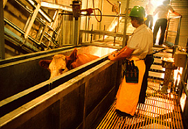
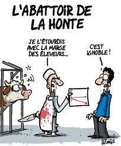

Abattoirs : la souffrance animale au cœur du débat citoyen
Des scandales répétés, des lois insuffisantes, des millions d'animaux concernés chaque jour. La France peut-elle encore détourner le regard ?
Par Mathieu
❦ ❦ ❦

Chaque jour en France, trois millions d'animaux sont mis à mort dans les abattoirs. Derrière ce chiffre vertigineux se cachent des réalités que peu de citoyens connaissent — et que certains préféreraient ne jamais voir.
Les scandales
Depuis 2015, l'association L214 publie des enquêtes filmées dans des abattoirs français. Animaux mal étourdis, souffrances visibles, non-conformités répétées : chaque révélation provoque un choc dans l'opinion publique.

80 %d'abattoirs non conformes en 2016
La loi
La réglementation impose l'étourdissement des animaux avant la mise à mort. Pourtant, 62 % des abattoirs dérogent à cette obligation. Les inspections existent, mais leurs résultats restent trop souvent sans suite.
« Faire souffrir un animal est contraire à l'éthique qui impose de respecter leur nature sensible. »
— Fondation Droit Animal
3 Manimaux abattus chaque jour
Les solutions
Caméras dans les abattoirs, abattoirs mobiles, renforcement des contrôles : les propositions ne manquent pas. En 2024, 63 % des Français estimaient que les animaux étaient mal défendus. La réponse politique, elle, tarde à venir.
✦ Conclusion
Une question de société
La question des abattoirs touche à nos valeurs collectives. Réformer ce secteur, c'est reconnaître que les animaux sont des êtres sensibles, capables de souffrir.
La vraie question n'est peut-être pas ce qui se passe derrière les portes closes — mais pourquoi on préfère ne pas le savoir.
✦ ✦ ✦
✦ Sources ✦
Références
01
Association
L214 — L'abattage des animaux
Enquêtes filmées depuis 2008 et données sur les non-conformités.